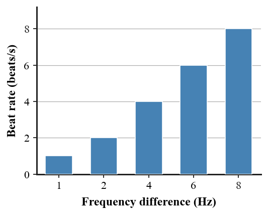

1. Define constructive sound interference.
2. Define destructive sound interference.
3. What does a repeating loud-soft-loud-soft pattern from two close tones indicate?
4. What quantity is found by $|f_1-f_2|$?
5. For complete cancellation of equal-amplitude simple tones at one location, how should their phases compare?
6. The graph shows measured beat rate for several frequency separations. Describe the relationship and use one point as evidence.

7. Two tones are 256 Hz and 260 Hz. Calculate the beat frequency.
8. A pair of strings produces 3 beats per second. After an adjustment, it produces 1 beat per second. Explain what happened to the frequency difference.
9. A headphone cancels a steady low-frequency hum well but not a rapidly changing sound. Explain why a fixed opposite pattern is harder to match to a changing signal.
10. Two equal-frequency speaker signals arrive exactly in phase at a point. Predict whether the pressure variations reinforce or cancel and explain.
11. A student claims any two sounds played together make beats. Evaluate the claim and identify the frequency condition that produces a slow, noticeable beat pattern.
12. A model of noise cancellation shows an “opposite” wave but does not specify timing. Explain why the model is incomplete and what phase information is needed.
13. Out-of-phase equal sound waves can produce
14. A loud-soft pulsing from two steady close tones is called
15. $f_{beat}=|f_1-f_2|$ finds
16. Tones at 500 Hz and 506 Hz produce
17. Changing a string so beat rate falls from 5 Hz to 2 Hz means the string frequency is
18. Why must active cancellation track the incoming signal?
19. Two identical signals arrive in phase. Their pressure variations
20. Which claim needs correction?